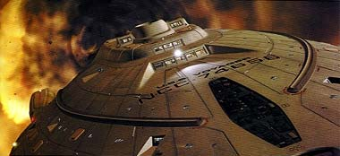
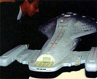
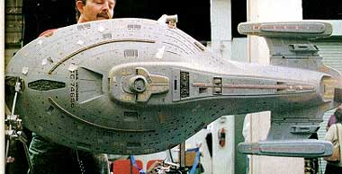
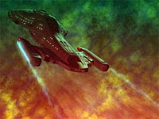
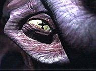

|
Os
efeitos especiais de Voyager

 Em
quase todos os aspectos, desde sua concepo at a produo, Voyager
se diferenciou dos demais seriados do universo de Jornada.
Pela primeira vez, seria o carro-chefe de uma rede televisiva, no
mais abordaria os Klingons ou Romulanos, haveria uma mulher na
cadeira de comando; isso todos j sabem. Entretanto, o que tornou
a srie nica na fico cientfica foram seus extraordinrios
efeitos visuais. Em
quase todos os aspectos, desde sua concepo at a produo, Voyager
se diferenciou dos demais seriados do universo de Jornada.
Pela primeira vez, seria o carro-chefe de uma rede televisiva, no
mais abordaria os Klingons ou Romulanos, haveria uma mulher na
cadeira de comando; isso todos j sabem. Entretanto, o que tornou
a srie nica na fico cientfica foram seus extraordinrios
efeitos visuais.
 Em
1994, Tony Meininger, da Brazil Fabrication, desenvolveu o modelo
definitivo da USS Voyager, em um processo de quase cinco meses.
Mas, ao contrrio das sries anteriores, Voyager quase no
utilizou miniaturas em sua produo. O modelo foi recriado em
CGI (computer generated imagery, ou, em portugus, imagem gerada
por computador) por empresas como Santa Barbara Studios,
Foundation Imaging, Digital Muse e Digital Magic.

Esse tipo de tecnologia cinematogrfica
mais barato do que as filmagens com maquetes, sem mencionar a
maior liberdade (e realismo) das seqncias de ao. Por outro
lado, perdeu-se aquele trabalho meticuloso e artesanal j
conhecido.
 Aos
olhos atentos, essa segunda verso da nave bastante diferente
da primeira. Os artistas acrescentaram mais detalhes e realaram
os interiores por trs das janelas. Em episdios como "The
Gift" e "Good Shepherd" h seqncias
em que a cmera aproxima-se da Voyager ao ponto de atravessar as
janelas e focalizar personagens, algo sem precedentes em Jornada
(exceto pela tomada de abertura do primeiro piloto da Srie Clssica,
"The Cage",
que tentou usar o efeito de forma bastante tosca num zoom da cmera
sobre a ponte da Enterprise). Aos
olhos atentos, essa segunda verso da nave bastante diferente
da primeira. Os artistas acrescentaram mais detalhes e realaram
os interiores por trs das janelas. Em episdios como "The
Gift" e "Good Shepherd" h seqncias
em que a cmera aproxima-se da Voyager ao ponto de atravessar as
janelas e focalizar personagens, algo sem precedentes em Jornada
(exceto pela tomada de abertura do primeiro piloto da Srie Clssica,
"The Cage",
que tentou usar o efeito de forma bastante tosca num zoom da cmera
sobre a ponte da Enterprise).
 Alm
disso, as cenas de batalha transformaram-se em grandes espetculos
(lembrando que a capit Janeway sempre consegue envolver sua nave
em guerras alheias). Destacam-se "Scorpion", "Year
of Hell" e "Dragon's Teeth".
 Mas
as novidades no se restringem nave. A introduo de aliengenas
como a Espcie 8472 foi um marco para o gnero sci-fi.
Finalmente a produo do seriado pde se livrar da criao de
aliengenas parecidos com os humanos. Em "Equinox"
aparecem seres nucleognicos de uma outra dimenso, outro
milagre dos efeitos "CGI". Vale lembrar tambm a
misteriosa raa Ba'Neth, da sexta temporada.
Embora o seriado at hoje no tenha emplacado e conquistado as
legies de fs que a Srie Clssica, A Nova Gerao
e Deep Space Nine obtiveram, ele se sobressai em termos de
premiaes por seus efeitos especiais. At hoje, foram dzias
de indicaes para o prmio Emmy (o Oscar da TV
norte-americana), sendo 7 delas apenas no ano 2000. Agora, basta
esperar quais sero as surpresas, na to esperada volta da USS
Voyager para casa em maio de 2001...
Daniel
Sasaki co-editor do Trek
Brasilis
|